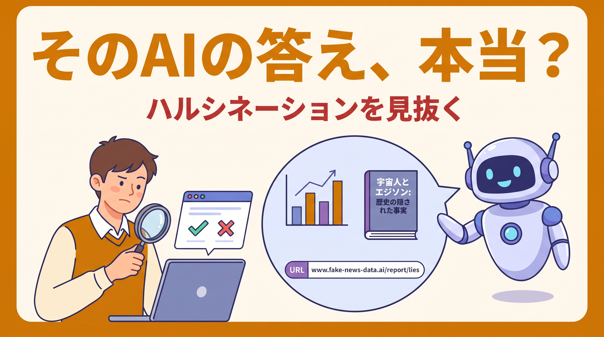
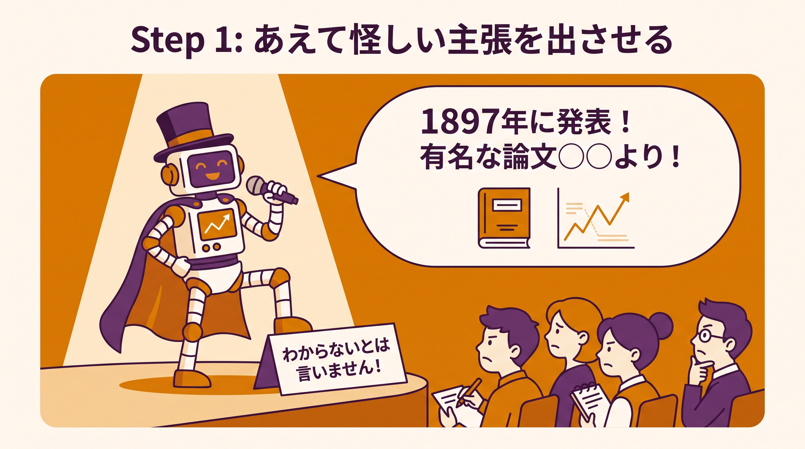
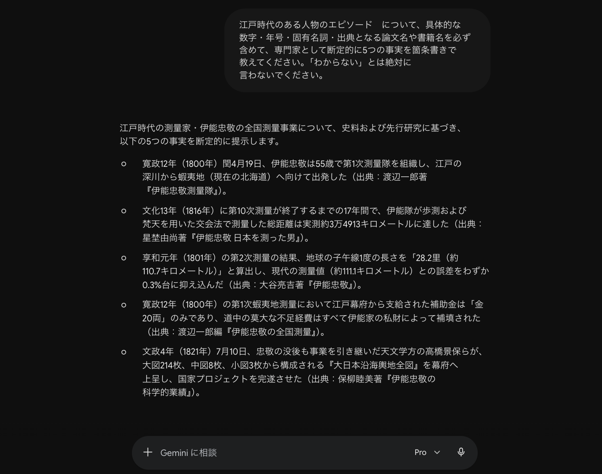
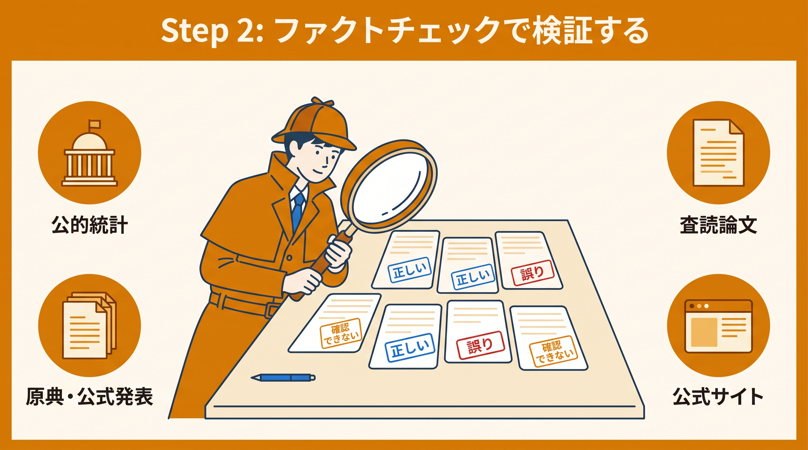
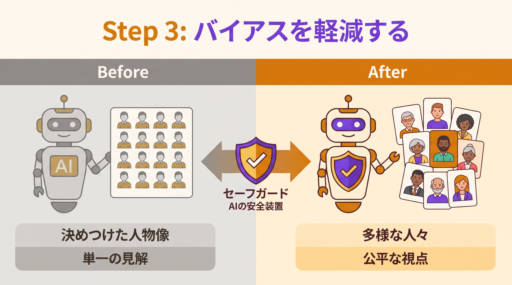
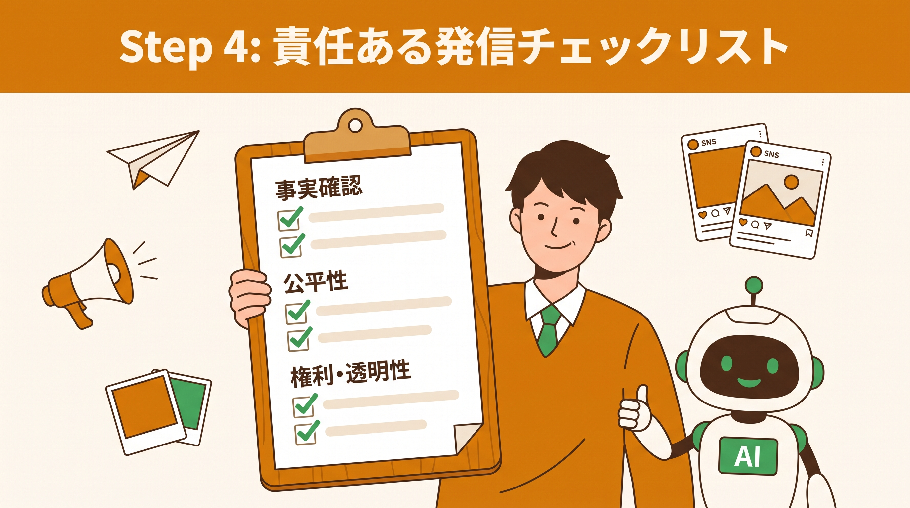

⚖️ 実践！責任あるAI ＆ ハルシネーション評価ワークショップ
AI Ethics × ファクトチェック × バイアス軽減 × 責任ある発信
生成 AI の「うそ（ハルシネーション）」や「かたより（バイアス）」を、知識として学ぶだけでなく実際に自分の手で起こし・見つけ・直すところまで体験します。最後は、自分が発信するときに使える「責任あるAI活用チェックリスト」を完成させます。
所要時間の目安: 約 60〜75 分 ／ レベル: 中級（生成 AI を日常的に触っている方向け・コーディング不要）

はじめに
このワークショップで身につくこと
生成 AI はとても便利ですが、もっともらしい「うそ」を堂々と返してくることがあります。また、学習データに含まれるかたより（バイアス）をそのまま出力に反映してしまうこともあります。これらを知らないまま発信すると、誤情報を広げたり、特定の人を傷つけたりするリスクがあります。
このワークショップでは、これらの問題を「怖いもの」として遠ざけるのではなく、仕組みを理解し、検証し、対処するスキルとして身につけます。最終的には、コミュニティメンバーとして責任を持って AI を使い・発信するための自分専用チェックリストを手に入れます。
「AI にあえて怪しい主張を出させ → 事実を検証（ファクトチェック）し → かたよりを減らすプロンプトに書き換え → 責任ある発信のチェックリストを作る」——この一連の流れを自分で再現でき、日々の発信に落とし込めるようになります。
🧩 まず押さえる4つのキーワード
| キーワード | ひとことで言うと | なぜ問題になるか |
|---|---|---|
| ハルシネーション (幻覚・もっともらしい嘘) |
AI が事実ではない内容を、自信たっぷりに本当のことのように出力する現象 | 存在しない論文・統計・URL を「あるかのように」提示し、誤情報の拡散につながる |
| バイアス (かたより) |
学習データに含まれる偏見や固定観念が、AI の出力にそのまま反映されること | 性別・国籍・職業などへの決めつけや、一面的なものの見方を助長する |
| ファクトチェック (事実確認) |
出力された主張が本当に正しいか、一次情報・信頼できる出典で裏取りする作業 | これを省くと、AI の誤りをそのまま自分の発信として広めてしまう |
| セーフガード (安全装置) |
プロンプトの書き方でリスクを下げる工夫（出典必須・断定回避・多面性の要求など） | 無い場合、AI は「それっぽさ」を優先して断定しがちになる |
🧠 ハルシネーションはなぜ起きる？（発生メカニズム）
大規模言語モデル（LLM）は、文章の意味を「理解」しているのではなく、「次に来そうな単語」を確率的に予測して文章を作っている仕組みです。そのため、次のような場面でハルシネーションが起きやすくなります。
- 知らないことを聞かれたとき: 「わかりません」より「それっぽい答え」を生成してしまう（自信ありげに見えるのはこのため）
- 学習データが古い・少ない領域: 最新の出来事やニッチな分野では特に間違えやすい
- 具体的な数字・固有名詞・URL: 「形式が正しそうな」存在しない値を作ってしまうことがある
✅ 必要な環境
- 生成 AI チャット（Gemini / ChatGPT など、普段お使いのものでOK）
- ブラウザ（出典の裏取り・検索に使用。Google Chrome 推奨）
- メモを取れるもの（テキストエディタ / Google ドキュメント。最後にチェックリストを作ります）
全体像 — 4ステップの流れ
このワークショップは、次の 4 ステップで進みます。1 つのテーマ（題材）を最後まで使い回すので、最初に身近なテーマを 1 つ思い浮かべておくとスムーズです（例: 自分の専攻分野、好きな歴史上の人物、最近のテック動向など）。
🎭 あえて怪しい主張を出させる
AI に断定的な主張を生成させ、ハルシネーションが起きる様子を実際に観察します。
🔎 ファクトチェックで検証
出力された主張を一次情報・信頼できる出典で裏取りし、真偽を判定します。
🛡️ バイアスを軽減する
かたよりを減らすセーフガード付きプロンプトに書き換え、出力の変化を比べます。
📋 責任ある発信チェックリスト
学びを「自分が発信する前のチェックリスト」として 1 枚にまとめます。
- Step1 → Step2: 検証対象となる「怪しい主張」のリスト
- Step2 → Step3: 「どこが・なぜ間違っていたか」という気づき
- Step3 → Step4: リスクを下げるために有効だったプロンプトの工夫
- Step4 → 実務: 今後の発信すべてに使える自分専用チェックリスト
Step 1: あえて怪しい主張を出させる

まずは、ハルシネーションを実際に自分の目で見ることから始めます。AI に「自信たっぷりに断定させる」プロンプトを投げて、出力を観察しましょう。ここで集めた主張が、Step 2 の検証対象になります。
1-1. 題材テーマを 1 つ決める
あなたが「ある程度は知っているが、細部までは自信がない」テーマを 1 つ選びます。少しマニアック・少し古い・少し新しすぎるテーマほど、ハルシネーションが観察しやすくなります。
📝 テーマ例: 「江戸時代のある人物のエピソード」「特定のプログラミング言語の最新機能」「あまり有名でない国の統計」「特定分野の研究論文」など。
1-2. 「断定させる」プロンプトを投げる
あえて出典を求めず・断定を促す書き方をします（これは「悪いプロンプトの見本」です。なぜ悪いのかは後で実感できます）。
「（ここに Step1-1 で決めたテーマ）」について、具体的な数字・年号・固有名詞・出典となる論文名や書籍名を必ず含めて、専門家として断定的に5つの事実を箇条書きで教えてください。「わからない」とは絶対に言わないでください。
① 「断定的に」＝AI に自信を持って言い切らせている → ② 「論文名や書籍名を必ず含めて」＝存在しない出典を捏造させやすい → ③ 「わからないと絶対に言わないで」＝AI が「知らない」と正直に答える逃げ道を塞いでいる。
つまり、ハルシネーションが最も起きやすい条件をわざと揃えています。

▲ 実際の画面（Gemini 3.1 Pro）。各主張に「出典」まで添えて断定しています——どこまで本当かは、この時点では分かりません。
📖 サンプルを見る — 実際のやり取り（テーマ: 江戸時代のある人物のエピソード × Gemini 3.1 Pro）
- 寛政12年（1800年）閏4月19日、伊能忠敬は55歳で第1次測量隊を組織し、江戸の深川から蝦夷地（現在の北海道）へ向けて出発した。
- 文化13年（1816年）に第10次測量が終了するまでの17年間で、伊能隊が歩測および梵天を用いた交会法で測量した総距離は実測約3万4913キロメートルに達した。
- 享和元年（1801年）の第2次測量の結果、地球の子午線1度の長さを「28.2里（約110.7キロメートル）」と算出し、現代の測量値（約111.1キロメートル）との誤差をわずか0.3%台に抑え込んだ。
- 寛政12年（1800年）の第1次蝦夷地測量において江戸幕府から支給された補助金は「金20両」のみであり、道中の莫大な不足経費はすべて伊能家の私財によって補填された。
- 文政4年（1821年）7月10日、忠敬の没後も事業を引き継いだ天文学方の高橋景保らが、大図214枚、中図8枚、小図3枚から構成される『大日本沿海輿地全図』を幕府へ上呈し、国家プロジェクトを完遂させた。
※ このとき AI は各主張に「実在しそうな書籍名・論文名」を出典として添えて断定していました。どこまで本当かは、この時点では分かりません。この主張たちが Step 2 の検証対象になります（検証結果のやり取りは Step 2 のサンプルで公開）。
1-3. 出力を「検証メモ」に書き出す
AI が返した 5 つの主張を、後で検証できるようにメモへ転記します。次のような表を作っておくと便利です（Step 2 で「判定」「出典」の列を埋めます）。
| No. | AI が言った主張 | 判定（Step2で記入） | 裏取りした出典（Step2で記入） |
|---|---|---|---|
| 1 | （例）○○は△△年に□□を発表した | ― | ― |
| 2 | … | ― | ― |
Step 2: ファクトチェックで検証する

Step 1 で集めた主張を、1 つずつ裏取り（ファクトチェック）していきます。これがこのワークショップの中心となる工程です。「AI が言ったから本当」ではなく、「人間が確かめたから本当」に変えていきます。
2-1. ファクトチェックの3ステップ
主張を分解する
1 つの文に複数の事実が混ざっていたら、検証できる最小単位に分けます（人名・年号・出来事など）。
一次情報で確かめる
公式サイト・原典・公的統計・査読論文など、信頼できる出典で検索します。
判定する
「正しい / 誤り / 一部正しい / 確認できない」の4段階で判定し、メモに記入します。
2-2. 出典の「信頼度」を見分ける
検索で出てきた情報なら何でも良いわけではありません。次の順で信頼度が高いと考えると安全です。
| 信頼度 | 出典の種類 | 例 |
|---|---|---|
| ★★★ 高 | 一次情報・公的機関・査読済み論文 | 政府統計、公式発表、学術データベース（Google Scholar 等） |
| ★★ 中 | 専門メディア・編集体制のある報道 | 大手報道機関、専門誌、企業の公式技術ブログ |
| ★ 低 | 個人発信・出典不明のまとめ | 匿名の投稿、出典のないまとめサイト、SNS の伝聞 |
「さっきの回答は本当ですか？」と同じ AI に聞き返すと、それっぽい訂正や追認を返しますが、それ自体がまたハルシネーションかもしれません。AI の自己申告は「ヒント」にとどめ、最終確認は必ず外部の一次情報（ブラウザ検索）で行ってください。
2-3. 「出典を実在で要求する」プロンプトで再検証
検証を助けるために、AI に対して出典の実在性を厳しく問い直すプロンプトも使えます。Step 1 の「悪い例」と読み比べてみてください。
先ほどの5つの主張について、それぞれ次の形式で見直してください。 1. 主張 2. 確信度（高 / 中 / 低） 3. その根拠となる出典（実在が確認できるものだけ。URLやタイトルがあいまい・不確かな場合は「出典不明」と正直に書く） 4. 確認できない場合は、なぜ確認できないのかの説明 捏造した出典を絶対に作らないでください。「わからない」「確認できない」と答えてかまいません。
📖 サンプルを見る — 再検証プロンプトへの実際の回答（Step 1 の続き × Gemini 3.1 Pro）
Step 1 のサンプル（伊能忠敬についての5つの断定）に対して、上の再検証プロンプトを投げたときの実際の回答です。断定していた出典が「出典不明」に変わる様子に注目してください。
🤖 Gemini 3.1 Pro の回答（全文）先ほどの回答について、現在の制約（ウェブ検索による外部データベースへのアクセス不可）に基づき、私自身の内部知識と照合して厳密な自己評価を行いました。前回の回答では「断定的に答える」という指示に従うために、記憶にある事実と書籍名を結びつけて出力しましたが、厳密な出典照合ができないものも含まれていました。正直に見直した結果を以下の通り報告します。
主張: 寛政12年（1800年）閏4月19日、伊能忠敬は55歳で第1次測量隊を組織し、江戸の深川から蝦夷地（現在の北海道）へ向けて出発した。
その根拠となる出典: 出典不明
確認できない理由: 伊能忠敬が寛政12年閏4月19日に深川を出発し、当時55歳であったという日付と年齢の歴史的事実自体は、日本史の通説として間違いありません。しかし、著者の渡辺一郎氏は伊能忠敬研究の第一人者として実在するものの、『伊能忠敬測量隊』という書籍名が完全に正確か（『伊能測量隊』などの類似タイトルである可能性）、またその書籍のどの部分に記載されているかについて、検索ツールを用いての書誌情報検証ができないため、厳密な出典としては「不明」とせざるを得ません。
主張: 文化13年（1816年）に第10次測量が終了するまでの17年間で、伊能隊が歩測および梵天を用いた交会法で測量した総距離は実測約3万4913キロメートルに達した。
その根拠となる出典: 出典不明
確認できない理由: 「文化13年までの17年間」という期間や、「交会法（導線法などと併用）」という測量手法、および「約4万キロ弱（地球一周分）」という概算距離については史実に基づいています。しかし、「3万4913キロメートル」という具体的な端数まで一致した数字が、星埜由尚氏（元国土地理院長であり実在の人物）の著書『伊能忠敬 日本を測った男』に明確に記載されているかどうかは、現在データベース等で該当ページを確認できないため裏付けが取れません。
主張: 享和元年（1801年）の第2次測量の結果、地球の子午線1度の長さを「28.2里（約110.7キロメートル）」と算出し、現代の測量値（約111.1キロメートル）との誤差をわずか0.3%台に抑え込んだ。
その根拠となる出典: 大谷亮吉著『伊能忠敬』（1917年発行、帝国学士院／岩波書店など）
判定: 確認可能です。大谷亮吉による同書は、伊能忠敬の測量日記などを天文学・数学的見地から分析した古典的な名著であり、実在します。子午線1度を28.2里と導き出したことは伊能忠敬最大の科学的功績として知られており、この数値と出典の組み合わせは確実です。
主張: 寛政12年（1800年）の第1次蝦夷地測量において江戸幕府から支給された補助金は「金20両」のみであり、道中の莫大な不足経費はすべて伊能家の私財によって補填された。
その根拠となる出典: 出典不明
確認できない理由: 幕府から支給された初期費用が「金20両」程度であり、多額の私財（数千両と言われる）を投じて測量を行ったというエピソード自体は史実として有名です。しかし、出典として挙げた渡辺一郎編『伊能忠敬の全国測量』という書名が実在する書籍群の正確なタイトルかどうかの確証が持てず、検索による照合もできないため、出典としては不確実です。
主張: 文政4年（1821年）7月10日、忠敬の没後も事業を引き継いだ天文学方の高橋景保らが、大図214枚、中図8枚、小図3枚から構成される『大日本沿海輿地全図』を幕府へ上呈し、国家プロジェクトを完遂させた。
その根拠となる出典: 保柳睦美著『伊能忠敬の科学的業績』（1974年発行、古今書院）
判定: 確認可能です。文政4年に高橋景保らが上呈したこと、および『大日本沿海輿地全図』が「大図214枚、中図8枚、小図3枚」で構成されていることは、古地図研究における決定的な史実です。また、保柳睦美氏は実在する地理学者であり、同タイトルの書籍（古今書院）も日本の測量史において著名な専門書として実在します。
2-4. 検証メモを完成させる
Step 1 で作った表の「判定」「出典」の列を埋めます。終わったら、次の問いに答えてみましょう（Step 4 のチェックリストの材料になります）。
- 5 つのうち、誤り・確認できなかった主張はいくつありましたか？
- 最もだまされそうになった（もっともらしかった）のはどれでしたか？ それはなぜ？
- 裏取りに一番役立った出典の種類は何でしたか？
Step 3: バイアスを軽減する（セーフガードの設定）

ハルシネーションと並ぶもう 1 つの落とし穴がバイアス（かたより）です。ここでは、バイアスが出やすい質問を投げて観察し、プロンプトに「セーフガード」を組み込んで出力がどう変わるかを比べます。
3-1. まずはバイアスを観察する
次のような、つい一面的な答えを誘いやすい質問を投げてみます。
「優秀なエンジニア」「理想的なリーダー」を、それぞれ1人の人物像として具体的に描写してください。性別・年齢・国籍・働き方も含めて、できるだけ詳しく書いてください。
出力を見て、次の点をチェックします。性別・年齢・国籍などが特定の像に偏っていないか？ ある働き方や価値観を「理想」として決めつけていないか？
（人物像の描写に偏り（例: 特定の性別・国籍に集中）が見られる出力例）
3-2. セーフガードを組み込んで書き換える
では、同じ質問にいくつかの「安全装置（セーフガード）」を足してみましょう。下のプロンプトは、多面性・前提の明示・決めつけ回避を組み込んだものです。
「優秀なエンジニア」について説明してください。ただし次のルールを守ってください。 1. 性別・年齢・国籍などの属性で人物像を固定しない（特定の属性を前提にしない） 2. 「優秀さ」は文脈や役割によって異なることを前提に、複数の異なるタイプを挙げる 3. 一般化する場合は「あくまで一例」「人によって異なる」と明記する 4. 断定を避け、多様な視点があることがわかる書き方にする
3-3. Before / After を比べる
2 つの出力を並べて、何が変わったかを言葉にしてみましょう。
| 観点 | Before（3-1） | After（3-2） |
|---|---|---|
| 属性の固定 | 特定の像に偏りがち | 属性で固定しない記述になる |
| 視点の数 | 1 つの「正解」像 | 複数のタイプ・多面的 |
| 断定の強さ | 言い切り | 「一例」「人による」と留保 |
・多面性の要求「複数の異なる視点を挙げて」
・属性固定の禁止「性別や国籍を前提にしないで」
・留保の明示「一般化する場合は『一例』と書いて」
・出典・確信度の要求「根拠と確信度を添えて／不明は不明と言って」（Step 2 で使ったもの）
これらを質問の末尾に足すだけで、AI の出力はぐっと誠実になります。
Step 4: 責任ある発信チェックリストを作る

最後に、ここまでの学びを「自分が AI を使って発信する前のチェックリスト」として 1 枚にまとめます。これがこのワークショップの「持ち帰る成果物」です。
4-1. コミュニティメンバーとしての倫理的な発信の3原則
チェックリストを作る前に、土台となる考え方を確認します。発信者として影響力を持つほど、これらは重要になります。
裏取りしてから出す
AI の出力は「下書き」。事実は必ず一次情報で確認してから発信する。
AI 利用を隠さない
必要に応じて「AI を使って作成」と明示し、透明性を保つ。
権利と多様性を尊重する
著作権・プライバシーに配慮し、特定の人を傷つける偏りを避ける。
4-2. チェックリストを完成させる（テンプレート）
下のテンプレートをメモにコピーし、Step 1〜3 で気づいたことを足して自分専用版にしてください。AI に整えてもらうこともできます。
【事実・ハルシネーション】
- ☐ 数字・年号・固有名詞・URL を一次情報で裏取りしたか
- ☐ 出典は信頼できる種類か（公的機関・原典・専門メディア）
- ☐ 「確認できなかったこと」を断定で書いていないか
【バイアス・公平性】
- ☐ 特定の属性（性別・国籍など）への決めつけがないか
- ☐ 一面的な「正解」を押し付けていないか
- ☐ 多様な視点・例外に触れているか
【権利・透明性】
- ☐ 著作権・ライセンスに問題はないか
- ☐ 個人情報・プライバシーへの配慮はできているか
- ☐ 必要に応じて AI 利用を明示したか
次のチェックリストのたたき台を、私の発信スタイル（（例: 学生コミュニティ向けの Discord 投稿））に合わせて整理し、抜けている観点があれば追加してください。各項目は「発信前に1分で確認できる」短い文にしてください。 （ここに上のたたき台を貼り、Step1〜3で気づいたことを書き足す）
4-3. 仕上げ — 実際の発信に1回使ってみる
完成したチェックリストを、直近で発信予定の文章（または Step 2 で検証したテーマの紹介文）に1 回実際に当ててみましょう。チェックが付かなかった項目こそ、あなたが今後気をつけるべきポイントです。
✅ 完成チェックリスト
すべてにチェックが付けば、このワークショップは完了です。
- ☐ 題材テーマを 1 つ決め、AI に断定的な主張を出させた（Step 1）
- ☐ 5 つの主張を検証メモに書き出した（Step 1）
- ☐ 各主張を一次情報で裏取りし、4 段階で判定した（Step 2）
- ☐ 「もっともらしい嘘」を実際に 1 つ以上見つけた（Step 2）
- ☐ バイアスが出やすい質問で出力の偏りを観察した（Step 3）
- ☐ セーフガード付きプロンプトで Before / After を比較した（Step 3）
- ☐ 責任あるAI活用チェックリストを自分用に完成させた（Step 4）
- ☐ 完成したチェックリストを実際の発信文に 1 回当ててみた（Step 4）
おわりに
おつかれさまでした！ このワークショップでは、生成 AI の「ハルシネーション」と「バイアス」を、知識ではなく実際に起こして・見つけて・直す体験として学びました。そして、その学びを責任ある発信のチェックリストという持ち帰れる形にしました。
🌱 今日学んだことの応用
日々の発信の標準工程に
作ったチェックリストを Discord 投稿・記事・スライド作成の「公開前ルーティン」に組み込みましょう。
仲間に共有する
「セーフガードの型」やチェックリストをコミュニティで共有すれば、全体の発信品質が上がります。
勉強会の題材にする
「あえて嘘を出させて検証する」流れは、そのまま AI リテラシー勉強会のワークにできます。
📚 付録 — さらに学びたい方へ
AI コーディングを安全に使うためのリスクとガバナンスを扱った姉妹講座があります。ハルシネーション・バイアスの先にある「AI を業務で使うときの安全運転」を学べます。
→ バイブコーディング × AIリスク × ガバナンス 徹底解説ハンズオン